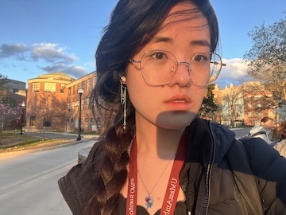

My aim is to combine technology with creative innovation for future game development. I am dedicated college sophmore with a strong passion for problem-solving, attention to detail, and I am a quick learner with excellent communication skills and a willingness to take on various tasks.
My goal is to pursue roles in game software engineering because it uniquely blends creativity and technology, an intersection that I find deeply fulfilling. Video games have the incredible power to tell stories, build communities, and provide immersive experiences that resonate with players on a personal level. As someone passionate about coding, I believe that software engineering within game development is the perfect platform for me to apply my technical skills to create engaging and inspiring experiences.
I am driven by the opportunity to contribute to an industry that needs more inclusivity and diversity. My current passion project focuses on developing a game that encourages players from diverse backgrounds to come together, breaking down stereotypes and fostering understanding. I want to be part of an industry that encourages these values, and I wish to be able to positively impact the gaming community. Ultimately, this career path offers a chance for professional growth while contributing to projects that align with my values and aspirations.
If you need to contact me, email me at zcxu4444@gmail.com